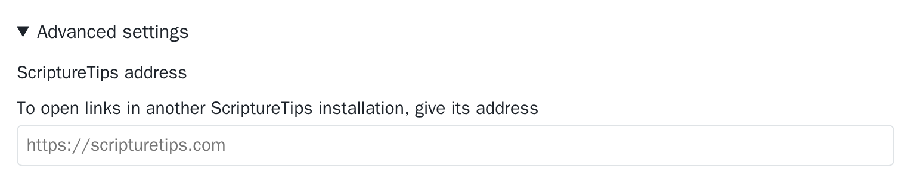

ScriptureTips is free software, and a church or community can run its own installation. If yours does, the extension can open links in its reader.

On the settings page, open Advanced settings (they stay closed until you do), and under ScriptureTips address enter the installation's address, starting with https://. Linked references and Read more then open there. Clear the field to go back to {{siteHost}}.
The passages in the tooltip still come from {{dataHost}}. The extension stays off the pages of {{siteHost}} and {{dataHost}} themselves.